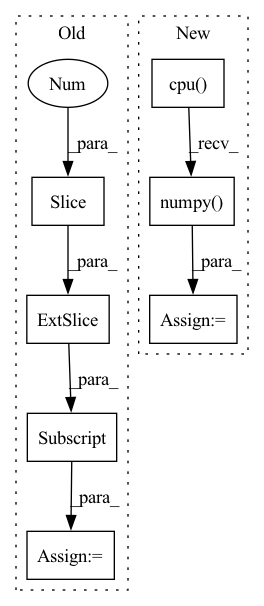

Pattern ID :34409
Before Change
spacing_raw = img_sitk.GetSpacing()
spacing = [spacing_raw[2], spacing_raw[1], spacing_raw[0]]
img_np = np.asarray(img_np, np.float32)
img_np = img_np[18:38, 63:183, 93:233]
msk_np = np.zeros_like(img_np, np.float32)
msk_np[10][60][70] = 1.0
msk_np = 1.0 - msk_np
After Change
img_np, msk_np, spacing, v=1e10, lamb=1.0, iter=2
)
dst1 = (
generalised_geodesic3d_raster_4scan_cpp(
image=img.to("cpu"),
mask=msk.to("cpu"),
spacing=spacing,
v=1e10,
lamda=1.0,
iter=2,
)
.squeeze_()
.detach()
.cpu()
.numpy()
)
dst2 = (
generalised_geodesic3d_raster_4scan_vectorised(
image=img.to("cpu"),In pattern: SUPERPATTERN
Frequency: 4
Non-data size: 7
Instances Fragment ID: 98683745
Project Name: masadcv/fastgeodis
Commit Name: 89652201af8fa40d457740fd68773304e38187f6
Time: 2021-06-16
Author: muhammad.asad@kcl.ac.uk
File Name: geodist3d.py
M Class Name: AnonimousClass
N Class Name: AnonimousClass
M Method Name: test_compare_original_imp(0)
N Method Name: test_compare_original_imp(0)
M Parent Class:
N Parent Class:
M File Name: geodist3d.py
N File Name: geodist3d.py
M Start Line: 271
M End Line: 272
N Start Line: 295
N End Line: 308
Before Change
if self.match_dims == 2:
coord = f_frame[:, 2:4]
elif self.match_dims == 3:
coord = f_frame[:, 2:5]
else:
raise ValueError("Match dims must be 2 or 3.")
self.clusterer.fit(coord.cpu().numpy())After Change
dist_mat_lat = scipy.spatial.distance.squareform(dist_mat_lat)
coord_ax = f_frame[:, [3]]
dist_mat_ax = scipy.spatial.distance.pdist(coord_ax.cpu().numpy() )
dist_mat_ax = scipy.spatial.distance.squareform(dist_mat_ax)
// where the z values are too different, don"t merge
dist_mat_lat[dist_mat_ax > self.ax_th] = 999999999999. Fragment ID: 98683750
Project Name: turagalab/decode
Commit Name: 0e5761c7b77ba95abc1eca3a0ab82f346056cc26
Time: 2019-09-04
Author: gitdev@LRM.photo
File Name: deepsmlm/neuralfitter/post_processing.py
M Class Name: ConsistencyPostprocessing
N Class Name: ConsistencyPostprocessing
M Method Name: _cluster(3)
N Method Name: _cluster(3)
M Parent Class: PostProcessing
N Parent Class:
M File Name: deepsmlm/neuralfitter/post_processing.py
N File Name: deepsmlm/neuralfitter/post_processing.py
M Start Line: 338
M End Line: 365
N Start Line: 391
N End Line: 430
Before Change
// extract ignore mask
ignore = gts[:, -1]
gt_boxes = gts[:, :4]
// count keeped gts
total_faces += (ignore == 0).sum()
After Change
gt_boxes = [gt_boxes.cpu().float().numpy() for gt_boxes in self.gt_boxes]
ignore_flags = [ignore_flag.cpu().numpy() for ignore_flag in self.ignore_flags]
total_faces = 0
Fragment ID: 98683740
Project Name: borhanmorphy/fastface
Commit Name: c5da7ce5325ff194e2b96a81245e3834e7bd2c29
Time: 2021-05-09
Author: borhano.f.42@gmail.com
File Name: fastface/metric/widerface_ap.py
M Class Name: WiderFaceAP
N Class Name: WiderFaceAP
M Method Name: compute(1)
N Method Name: compute(1)
M Parent Class: Metric
N Parent Class: Metric
M File Name: fastface/metric/widerface_ap.py
N File Name: fastface/metric/widerface_ap.py
M Start Line: 49
M End Line: 70
N Start Line: 55
N End Line: 74